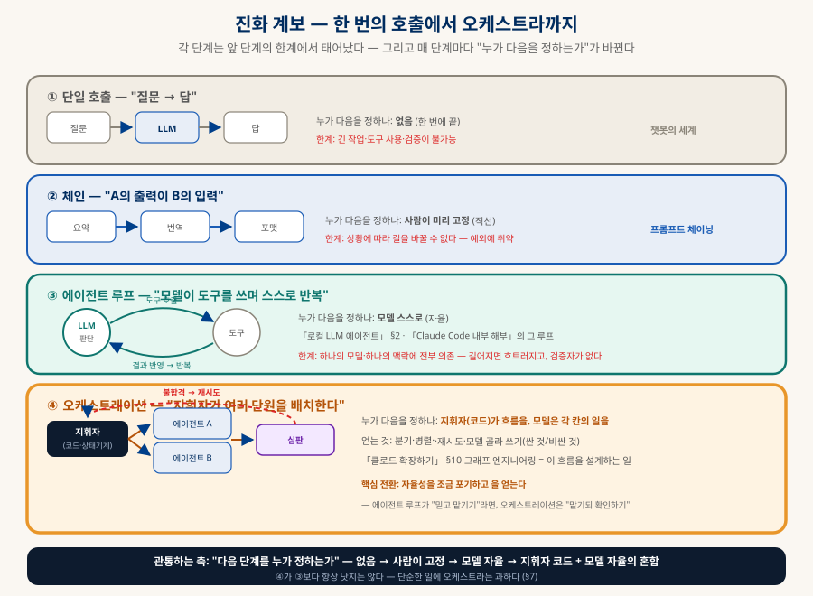
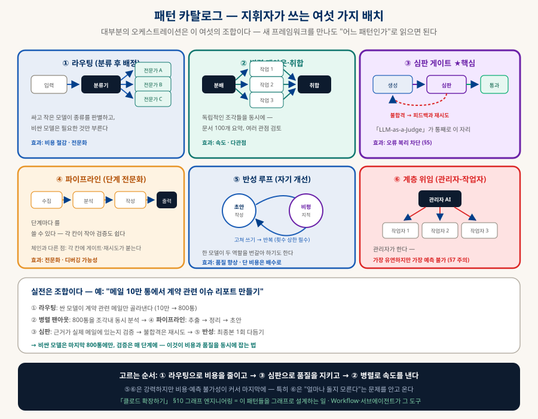
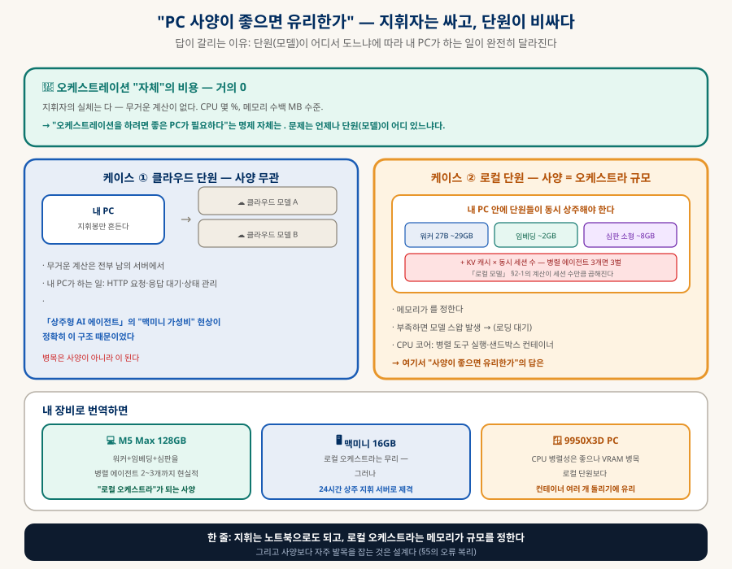

AI 오케스트레이션
지휘자는 싸고, 단원이 비싸다
여러 모델과 에이전트를 하나의 흐름으로 조율하는 일 — 자율성을 조금 포기하고 통제와 검증을 얻는 설계다. 패턴 여섯 가지, "PC 사양이 좋으면 유리한가"의 정확한 답, 그리고 오케스트레이션에서 사양보다 더 자주 발목을 잡는 것(오류의 복리)까지 — 움직이는 그림으로 해부한다.
0. 한눈에 보기 — 세 문장
급한 사람을 위한 요약
① 무엇인가
여러 AI 호출·도구·에이전트를 정해진 흐름으로 조율하는 것. 에이전트 루프가 "믿고 맡기기"라면 오케스트레이션은 "맡기되 확인하기" — 자율성을 조금 내주고 통제·검증을 얻는다 (§1).
② 사양이 중요한가
경우에 따라 완전히 갈린다. 지휘 자체는 거의 공짜라 클라우드 모델을 지휘하면 노트북으로도 충분하고, 로컬 모델을 지휘하면 메모리가 오케스트라의 규모 상한이 된다 (§4).
③ 진짜 병목
대부분의 실패는 사양이 아니라 설계다. 검증 없이 단계를 이으면 오류가 복리로 증폭된다 — 90% 정확도 × 5단계 = 59% (§5).
0-1. 이 문서의 개념 그래프 — 노드를 눌러 관계를 따라가기 (인터랙티브)
이 문서에 나오는 개념들을 노드로, 이름 붙은 관계를 선으로 그렸다. 노드를 누르면 이웃만 밝아지고 관계 이름이 선 위에 나타나며, 아래 칸에 한 줄 정의와 해당 절로 가는 링크가 뜬다. 끌어서 옮길 수도 있다.
1. 진화 계보 — 한 번의 호출에서 오케스트라까지
관통하는 축: "다음 단계를 누가 정하는가"

2. 실행 흐름 — 지휘자가 실제로 하는 일
작업 하나가 오케스트라를 통과하는 과정
3. 패턴 카탈로그 — 지휘자가 쓰는 여섯 배치
대부분의 오케스트레이션은 이 여섯의 조합이다

| 패턴 | 언제 쓰나 | 주의 |
|---|---|---|
| ① 라우팅 | 입력의 종류가 다양할 때 — 싼 모델이 분류하고 비싼 모델은 필요할 때만 | 분류가 틀리면 이후 전부 헛일 — 분류기에도 검증이 필요 |
| ② 병렬 팬아웃 | 독립적인 조각이 많을 때 (문서 100개 요약, 다관점 검토) | 로컬이면 동시 실행 수 = 메모리 제약 (§4) |
| ③ 심판 게이트 ★ | 거의 항상 — 단계가 둘 이상이면 사실상 필수 | 심판도 틀린다 — 「LLM-as-a-Judge」의 편향 대책 참조 |
| ④ 파이프라인 | 단계가 뚜렷하고 각 단계에 다른 전문성이 필요할 때 | 체인과의 차이는 각 칸에 게이트·재시도가 붙는 것 |
| ⑤ 반성 루프 | 품질이 비용보다 중요할 때 (최종 산출물 다듬기) | 비용이 배수로 — 반복 상한을 반드시 건다 |
| ⑥ 계층 위임 | 일의 구조를 미리 알 수 없을 때 (관리자 AI가 쪼갠다) | 가장 유연하지만 가장 예측 불가 — 비용·시간 상한 필수 |
4. "PC 사양이 좋으면 유리한가" — 지휘자는 싸고 단원이 비싸다
답이 갈리는 이유와, 내 장비별 번역

| 자원 | 오케스트레이션에서의 의미 (로컬 단원 기준) |
|---|---|
| 통합 메모리 ★ | "동시에 무대에 올릴 단원 수" — 워커+임베딩+심판을 갈아끼우지 않고 상주시킬 수 있는가. 부족하면 모델 스왑이 일어나 지휘가 멈춘다 |
| 메모리 (또 하나) | 병렬 세션 수 — 에이전트 3개가 동시에 돌면 KV 캐시도 3벌 (「로컬 모델」 §2-1의 계산 × 세션 수) |
| CPU 코어 | 병렬 도구 실행·샌드박스 컨테이너 여러 개 (「로컬 LLM 코딩 공장」의 격리) |
| 메모리 대역폭 | 각 단원의 응답 속도 — M 시리즈의 강점이 여기서 나온다 |
5. 오류의 복리 — 사양보다 자주 발목을 잡는 것
단계를 이으면 정확도는 곱해진다
6. 도구 지형 — 무엇으로 지휘하나
추상화 수준이 다른 세 층 (2026.08 개략)
| 층 | 대표 도구 | 성격 |
|---|---|---|
| 코드 프레임워크 | LangGraph · CrewAI · AutoGen | 그래프·역할로 흐름을 코드로 정의 — 세밀한 통제, 학습 곡선 있음 |
| 에이전트 도구 내장 | Claude Code의 서브에이전트·워크플로 | 이미 쓰는 도구 안에서 팬아웃·검증 — 별도 프레임워크 없이 시작 가능 (「클로드 확장하기」) |
| 로우코드·노코드 | n8n · Dify 류 | 화면에서 노드를 잇는다 — 비개발 협업·빠른 프로토타입에 유리 |
| 직접 구현 | 파이썬 스크립트 + 상태 기계 | 의외로 흔하고 충분하다 — 「로컬 LLM 코딩 공장」의 Goal Runner가 이 부류 |
7. 실전 설계 원칙
언제 오케스트라를 부르고, 어떻게 무너지지 않게 하나
| 원칙 | 내용 |
|---|---|
| ① 단순한 일엔 쓰지 않는다 | 한 번의 호출이나 에이전트 루프로 되는 일에 오케스트라는 과하다 — 단계가 늘수록 오류·비용·디버깅 난이도가 함께 는다 |
| ② 게이트 없는 단계 금지 | §5의 이유로 — 단계를 추가하려면 그 단계의 검증도 함께 추가한다 |
| ③ 상한을 반드시 건다 | 반복 횟수·비용·시간 상한 — 특히 ⑤반성·⑥계층 위임은 "얼마나 돌지 모른다"는 문제를 안고 온다 |
| ④ 모델을 계급별로 쓴다 | 분류·필터는 싼 모델, 최종 작성만 비싼 모델 — 라우팅(①)의 본질적 효과 |
| ⑤ 관찰 가능하게 만든다 | 어느 칸에서 무엇이 오갔는지 로그가 없으면 디버깅이 불가능하다 — 「로컬 LLM 코딩 공장」의 jsonl 로깅이 그 최소형 |
| ⑥ 결정적인 것은 코드로 | "숫자 합계"·"날짜 정렬" 같은 것을 모델에게 시키지 않는다 — 지휘자가 직접 계산하는 편이 정확하고 싸다 |
8. 함께 읽기
이 문서에서 갈라지는 길들
| 주제 | 문서 |
|---|---|
| 흐름 설계론 — 이 문서의 짝 | 「클로드 확장하기」 §8·§10 — 하네스·그래프 엔지니어링 |
| 심판 패턴의 교과서 | 「LLM-as-a-Judge」 — §3의 ③이 통째로 사는 곳 |
| 소박한 오케스트레이터의 실물 | 「로컬 LLM 코딩 공장」 — Goal Runner·샌드박스·로깅 |
| 로컬 단원의 메모리 계산 | 「현실적으로 사용해볼만한 로컬 모델」 §2-1·§5-1 |
| 에이전트 루프의 기초 | 「로컬 LLM 에이전트」 §2 · 「Claude Code 내부 해부」 |
| 상시 지휘 서버라는 형태 | 「상주형 AI 에이전트」 — 맥미니 가성비 현상의 정체 |